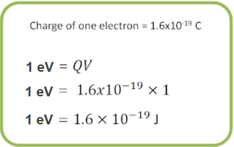
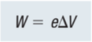
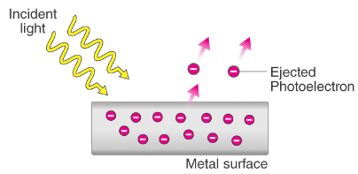
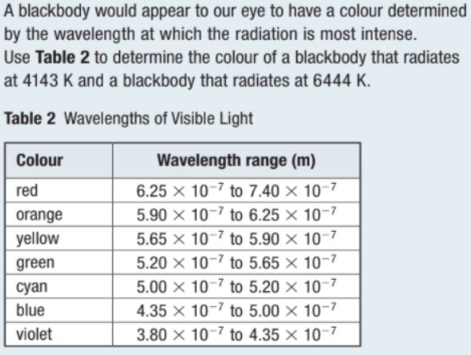
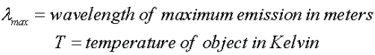
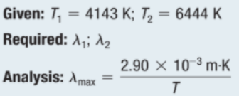

Photons and the Quantum Theory of Light
The Work Function
Around 1800, Thomas Young performed his double-slit interference experiment, which provided the first clear evidence that light is a wave.
Maxwell worked out his theory of electromagnetic waves about 60 years later.

Then, physicists developed a detailed theory of light as an electromagnetic wave and thought that the nature of light was well understood.
In the 1880s, however, studies of what happens when light shines onto metal gave some very puzzling results that the wave theory of light could not explain.
Metal contains electrons that are free to move around within the metal. However, these electrons are still bound as a whole to the metal because of their attraction to the positive charges of the metal atom nuclei. Energy is required to remove electrons from the atoms.
Work function (W) is the minimum energy needed to remove an electron bound to a metal surface. It has units of energy.
Researchers often give the value of the work function in electron volts (eV) rather than joules. One electron-volt is defined as the amount of energy given to an electron that accelerates through a potential difference of one volt.

You can measure the work function of a metal by applying an electric potential.
The smallest electric potential difference (🛆V) able to eject electrons gives the value of the work function, W:



Photoelectric Effect
A photoelectric effect is any effect in which light energy is converted to electricity.
First explained by Albert Einstein in 1905.

When light strikes certain light-sensitive materials, it may cause them to give up electrons.

What happens when the BLUE light strikes the metal foil? How about RED light?


When the blue light strikes the metal foil, the foil emits electrons.
When red light hits the metal foil, the foil does not emit (give off) electrons.

According to classical wave theory, the energy carried by a light wave is proportional to the intensity of the light. It should always be possible to eject electrons by increasing the intensity to a sufficiently high value.
Experiments found that when the frequency is below the threshold frequency, however, no electrons are ejected, no matter how great the light intensity is.
Second, the kinetic energy of an ejected electron is independent of the light intensity.
Classical theory predicts that increasing the intensity will increase the kinetic energy of the electrons, but experiments do not show this. Quantum theory eventually prevailed as the accepted explanation.
Einstein's Quantum Theory of Light
In 1905, Albert Einstein proposed that light should be thought of as a collection of particles, now called photons.
Photons have two important properties: Photons do not have any mass, and they exhibit interference effects, as electrons do in double-slit interference experiments.

According to Einstein, each photon carries a parcel of maximum kinetic energy (quantum) according to the following equation:

where f is the frequency of the light and h is a constant of nature called Planck’s constant.

Einstein’s quantum theory also explains why the kinetic energy of ejected electrons depends on light frequency but not intensity.
The threshold frequency in the photoelectric effect corresponds to photons whose energy is equal to the work function, W:


This is the equation of a straight line. Hence, the kinetic energy of an ejected electron should be linearly proportional to f.
The slope of this line is the factor that is multiplied by f, which is Planck’s constant, h.

Sample Problem #1
Determining Photon Energy


Callout
Practice

Photons Possess Energy and Momentum
Einstein’s quantum theory states that light energy can only be absorbed or emitted in discrete parcels, that is, as single photons. Each photon carries an energy equal to hf.
The classical theory of electromagnetic waves predicts that a light wave with energy E also carries a certain amount of momentum,


Evidence of Photon Momentum
In 1923, American physicist A.H. Compton (1892–1962) discovered a phenomenon that provided experimental evidence of the momentum carried by individual photons.

Instead of using visible light, Compton directed a beam of high-energy X-ray photons at a thin metal foil. The foil ejected both electrons and lower-energy X-ray photons.
This effect, in which incident X-ray photons lose energy and scatter off a metal foil along with free electrons, is called the Compton effect.

Photon Energy

Sample Problem #1
Analyzing Photon Energy and Momentum


Callout
Practice

Photon Interaction

In both the photoelectric effect and the Compton effect, when a photon comes into contact with matter, an interaction takes place.
Five Characteristics
A photon may simply reflect, as when photons of visible light undergo perfectly elastic collisions with a mirror.
A photon may free an electron and be absorbed in the process, as in the photoelectric effect.
A photon may emerge with less energy and momentum after freeing an electron. After this interaction with matter, the photon still travels at the speed of light but with less energy and a lower frequency. This is the Compton effect.
A photon may be absorbed by an individual atom and elevate an electron to a higher energy level within the atom. The electron remains within the atom but is in what is called an excited state.
A photon can undergo pair creation, where it becomes converted into two particles with mass. This process conserves energy and momentum because all the energy of the photon becomes converted into the kinetic energy of the new particles and their rest mass energy.
Blackbody Radiation
In 1901, Max Planck was studying blackbodies and blackbody radiation. A blackbody is an object that absorbs all radiation reaching it, and blackbody radiation is radiation emitted by a blackbody.
The specific problem that puzzled Planck is represented by the glowing oven. This oven emits radiation over a range of wavelengths and frequencies.


Wiens Law


Sample Problem #1
Blackbody Radiation


Callout
Practice

Wave-Particle Nature of Light
The photoelectric effect and blackbody radiation can only be understood in terms of the particle nature of light.
While light has some properties like those of a classical particle, it also has wave properties such as interference.

Watch this video: